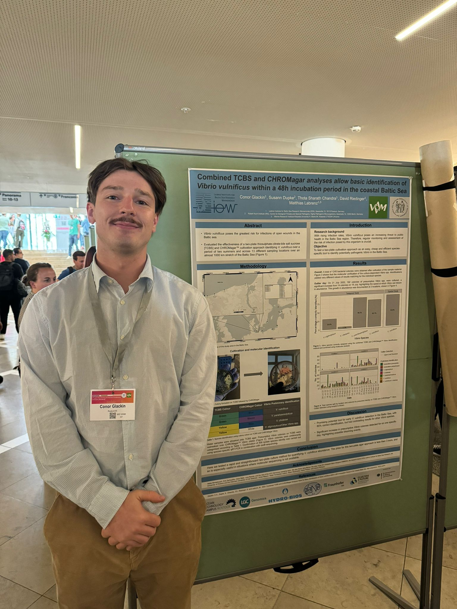

About
Decided to make this since I am in need of a job and since I don't post on LinkedIn wanted somewhere to hold all this information. I am a data scientist with a PhD (PhD defense pending) in environmental microbiology and a strong academic background in mathematics, probability, and statistics. My work focuses on applying machine-learning methods to complex environmental, and in the past, pharmaceutical datasets, with particular expertise in time-series analysis and predictive modelling.
I'm looking for a job in bioinformatics/data science. I am flexible on location. Although my expertise are now more environmentally/ biologically orientated, this is definitely not a deal-breaker and I would be open to delving back into my past experience in pharmaceuticals and genomics, although I definitely liked working with biological datasets the most. The main aspect I want is to be in a cutting-edge field, and use the skills I built up over the number few years data-science and statistics to drive cutting-edge and new, original results.
Main Skills
- 6 years programming (mainly R and JMP)
- Data cleaning and data analysis
- Application of machine learning methods
- Presenting results in numerous environments
- Data visualisation
- Statistics
- Working with biological datasets